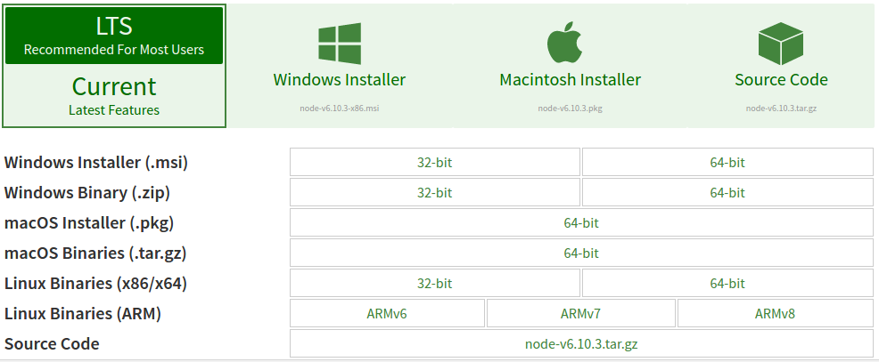
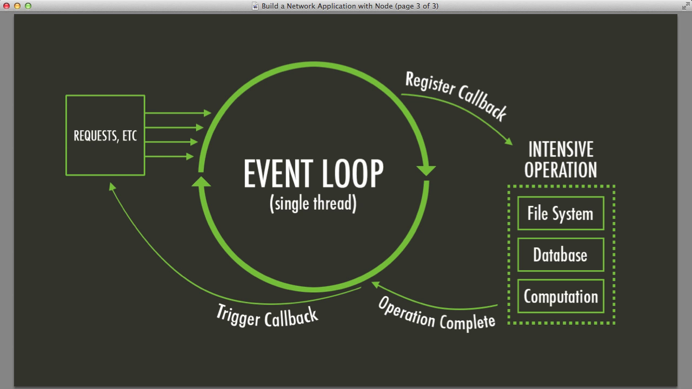
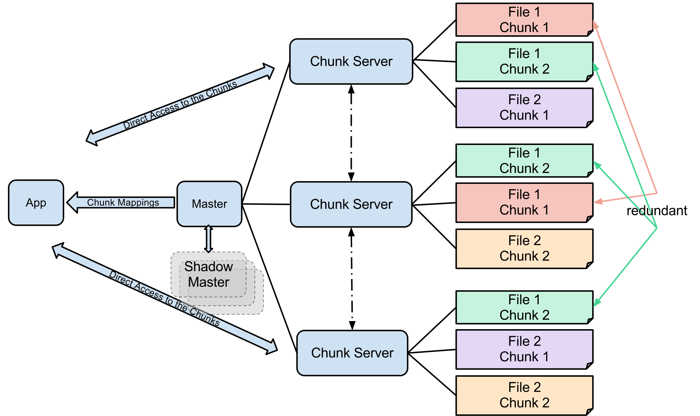

NodeJs
Absolute Beginiers Guide
In Short
JS apps which runs outside the scope of browser
So node isn't just a php/jsp or *sp replacement
There motivation is much more implicit here
Lets explore!
- NodeJs
- v8
- libuv
Assumptions
You are familiar with fundamentals of JS
You Know basics of
ES6
sh
Git
Installation
Head to https://nodejs.org/en/download/
Package Manager
NPM
package.json
Apache to Node
Request processing anology
Non Blocking - Event Driven IO
Non Blocking - Event Driven IO
Global Object
In Browser its the window object
var hello = 'Hello World';
console.log(window.hello);
//hello world
Node has a `global` Object
Any methods defined in global methods are ready to use. i..e we dont have to use `requrie`
Few of the global function
console
exports
global
module
process
require()
Example
console.log('Aurora') // Aurora
var planet = 'Earth'
console.log(`Hi from ${planet}`) // Hi from Earth
console.log(planet) // Earth
console.log(global.planet) // undefined,
//because each file is treated as a module and var will be associated with that module
Example
console.log(__dirname) // current directories full path
console.log(__filename) // current file's full path
//All JS functions are avail on node
var hw = 'Hello World'
console.log(hw.slice(5)) //world
//require is a function available in global object
var path = require('path')
Process Obejct
Interact with current process
process.argv object
//arg.js
console.log(process.argv)
node arg.js
[
'/usr/bin/nodejs',
'/home/*****/arg.js'
]
node arg.js --name Tesla
[
'/usr/bin/nodejs',
'/home/*****/arg.js' ,
--name ,
Tesla
]
process.stdin and process.stdout
process.stdout.write(" Hello World \n")
process.stdout.write(" Type something \n ")
process.stdin.on('data',function(data){
process.stdout.write(`\n You typed : ${data.toString().trim()}` )
process.exit();
})
process.on('exit',function(e){
process.stdout.write("\n Exiting process \n")
})
Other global function
setTimeOut
setInterval
require
var foo = require('foo')require is used to load modules from other files/libraries
var foo = require('foo')
//any methods defined in foo can be invoked by
foo.fooFunction();
foo.fooCallBackFunction('params', function(){
// if foo is supporting callback
})
Interacting with user!
With readLine()

Reading a user input
var readline = require('readline')
var rl = readline.createInterface(process.stdin, process.stdout)
rl.question('What is your name ?', function(answer){
console.log(answer)
}
A working example
var readline = require('readline')
//readline is a wraper around stdout and stdin
var rl = readline.createInterface(process.stdin, process.stdout)
var realPerson = {
name: '',
sayings : []
}
rl.question('What is your name ?', function(answer){
realPerson.name = answer;
rl.setPrompt(`What would ${realPerson.name} say ?`)
rl.prompt(); //displays the above prompt
//this fucntion will be triggered when a new line is entered
rl.on('line', function(saying){
realPerson.sayings.push(saying)
if(saying.toLowerCase().trim() === 'exit'){
rl.close();
}else{
rl.setPrompt(`What else would ${realPerson.name} say? (Press 'exit' to quit)`)
rl.prompt();
}
})
})
rl.on('close', function(){
console.log('%s is saying %j', realPerson.name, realPerson.sayings)
process.exit();
})
Event Emitters
We said that nodejs is an event driven languge
Most of the core nodejs api works wrt event-driven methadology
- All objects that emit events are instances of the EventEmitter class.
- When the EventEmitter object emits an event, all of the functions attached to that specific event are called synchronously.
lets get into an example

const EventEmitter = require('events');
class MyEmitter extends EventEmitter {}
const myEmitter = new MyEmitter();
myEmitter.on('event', () => {
console.log('an event occurred!');
});
myEmitter.emit('event');
Passing Arguments
es6
const myEmitter = new MyEmitter();
myEmitter.on('event', (a, b) => {
console.log(a, b, this);
// Prints: a b {}
});
myEmitter.emit('event', 'a', 'b');
es5
const myEmitter = new MyEmitter();
myEmitter.on('event', function(a, b) {
console.log(a, b, this);
});
myEmitter.emit('event', 'a', 'b');
Processes
Helps to execute external process
exec : exicute terminal command in nodejs
spawn : made for ongoing process with large amount of data
exec
const exec = require("child_process").exec;
exec('ls'); // exicutes ls on terminal
exec('ls', (err, stdout, stderr) => {
if(err){
throw err
}
console.log(`stdout: ${stdout}`);
console.log(`stderr: ${stderr}`);
})
//outputs the current directory listing
spawn
const spawn = require('child_process').spawn; // loading spawn module from spawn
const ls = spawn('ls', ['-lh', '/usr']); // ls to list, -lh is parameter to ls and /usr is where its exicuted
ls.stdout.on('data', (data) => { //when ever spawn trigger an event stdout
console.log(`stdout: ${data}`);
});
ls.stderr.on('data', (data) => { //during error
console.log(`stderr: ${data}`);
});
ls.on('close', (code) => { //finally
console.log(`child process exited with code ${code}`);
});
File System Interaction
Inbuilt library with NodeJS
Creating, Listing, Read,... files and directories
Reading a Directory
var fs = require('fs');
var files = fs.readdirSync('/var'); //read contents synchronously with a blocking request
console.log(files);
//Displays an array, which contains files of the directory
Doing Async List
// Doing async
fs.readdir('/home', (err, files) => {
if (err){
throw err;
}
console.log('/home =>',files)
})
Read File
var fs = require('fs');
var contents = fs.readFileSync("list.js", "UTF-8")
console.log(contents);
//Doing async
fs.readFile('list.js', 'UTF-8' ,(err, files) => {
if (err){
throw err;
}
console.log('list.js =>',files)
})
console.log('Reading Files...')
FS Can also Write, Move, Delete,... files
Streams
Where data flows
Streams can be readable, writable or Duplex
Why stream?
lets take an example without stream
var fs = require('fs')
fs.readFile('./chat.log', 'UTF-8', (err, chatLog) => {
//the entire contents of the files is written to chatLog variable :o
console.log(`${chatLog.length}`);
})
console.log(`Reading the file stream`);
Using read stream
var stream = fs.createReadStream('./chat.log', 'UTF-8')
//now data will be flowing as chunks to the stream variable
var data = "";
stream.once('data', () => {
process.stdout.write(` Started writing the data \n`)
})
stream.on('data', (chunk) => { //when the data event is raised, we have a small chunk of that file
process.stdout.write(` chunk: ${chunk.length} |`)
data += chunk;
})
stream.on('end', () => {
console.log(`Stream has ended reading the file.`);
console.log(data.length);
})
Write Stream
var stream= fs.createWriteStream();
//can be used to send writable stream
HTTP Module
Used to read contents from another server using http
Could be used with REST api's
HTTP request
var https = require('https');
var fs = require('fs');
var options = {
hostname : 'google.com',
port : 443,
path : '',
method : 'GET'
}
let req = https.request(options, (res) => {
// response come as a stream
let responseBody = ""
console.log('Response from started ');
console.log('Server status :', res.statusCode);
console.log('Response headers %j', res.headers); //%j will display as json
//by default the encoding will be binary, lets make it UTF-8
res.setEncoding('UTF-8')
//for the first time we can log the data
res.once('data', (chunk) =>{
console.log(chunk);
})
//on any data we recive
res.on('data', (chunk) => {
console.log(chunk.length);
responseBody += chunk
})
res.on('end', () =>{
fs.writeFile('file.html', responseBody, (err)=>{
if(err){
throw err
}
console.log('File writing completed');
})
})
})
req.on('error', (err) =>{
throw err
})
//we are closing the request
req.end();
Servers?

You may be wondering, how we are gonna run a server in node!
With http module we could create a smiple server
lets see how it goes!
HTTP Server
var http = require('http');
//#1
var server = http.createServer(function(req, res){
//#2
res.writeHead(200, {'Content-Type' : 'text/plain'})
//#3
res.end('Hello World'); //#4
});
//lets say server what ip and port it should listen to
server.listen(8080);
console.log('Server is listening on port 8080');
മാതാ പിതാ ഗുരുഃ ദൈവം
Thanks
- Lynda
- Youtube
- NodeJS Docs
- Stackoverflow